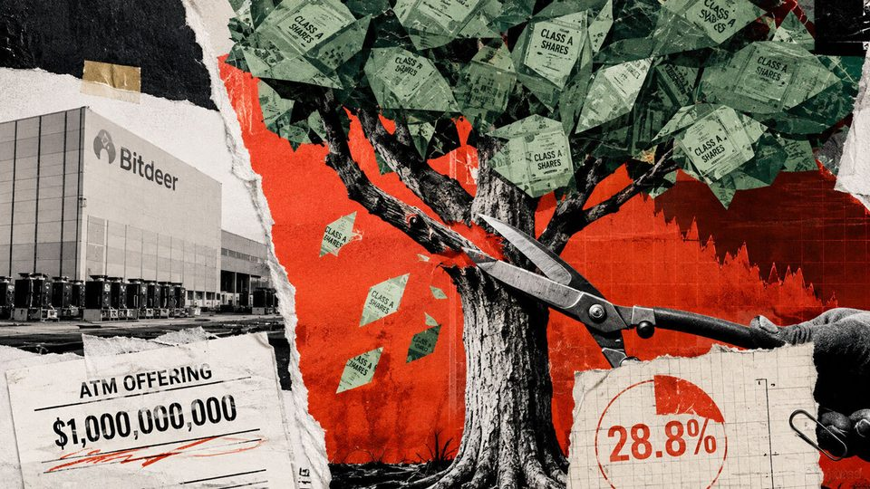
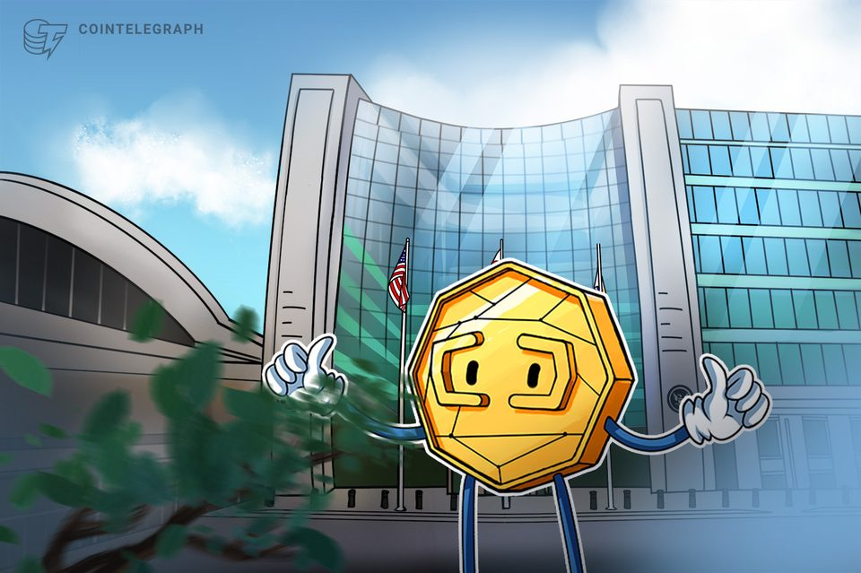
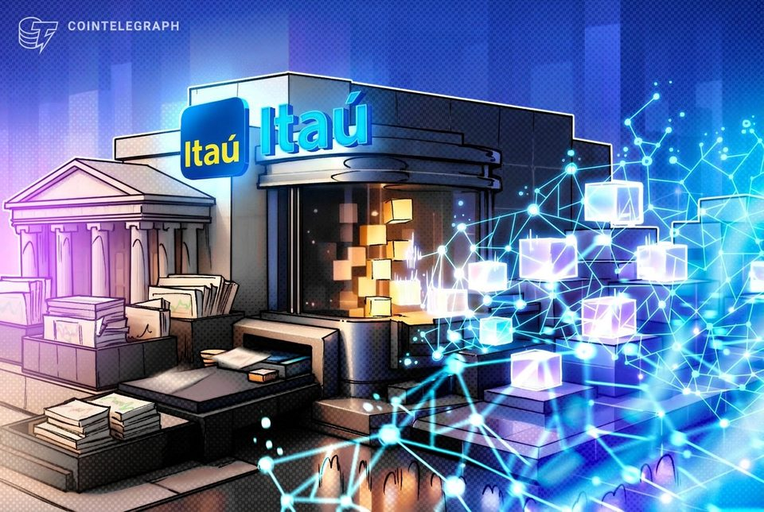
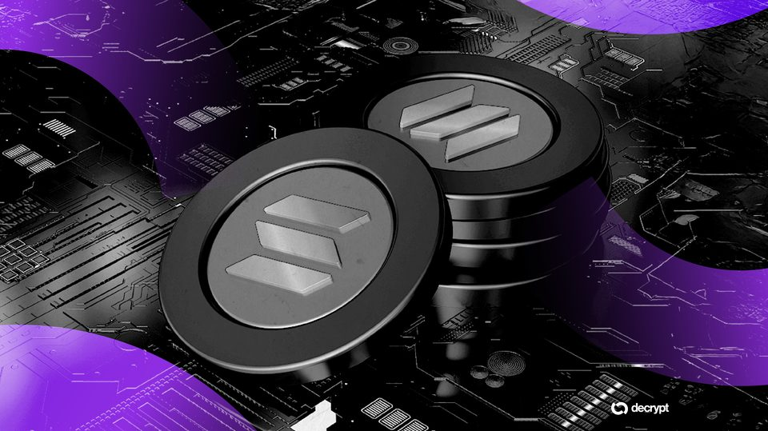
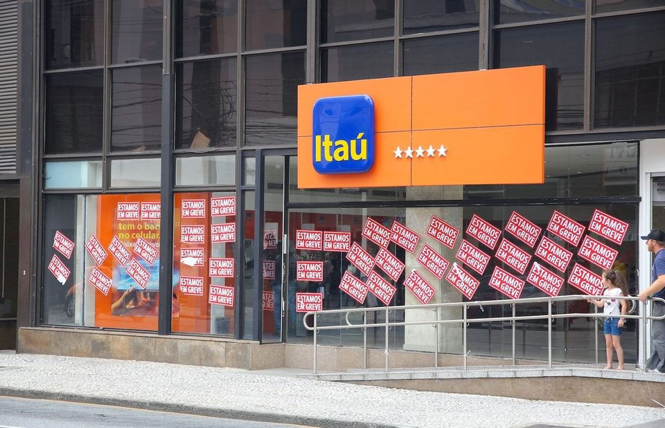
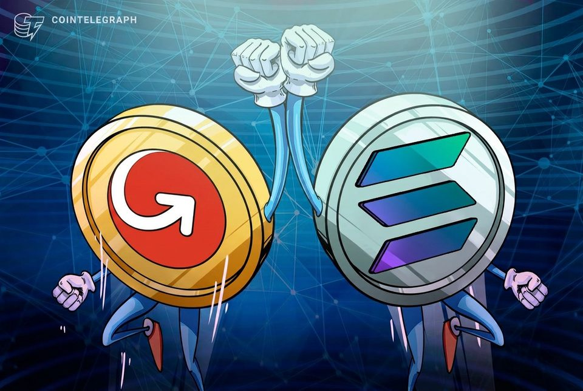

August 11, 2026
Daily headline set with source diversity, cleaned links, and local static rendering.

Another OpenAI Exec Quits in Leadership Shake-Up as AI Giant Eyes IPO
The former operating chief is starting a new venture following several departures across the ChatGPT developer’s leadership and safety teams.
Bitcoin stuck as ETF inflows offset selling, but inflation data could spark a move
Bitcoin stuck as ETF inflows offset selling, but inflation data could spark a move

Bitcoin miner Bitdeer unlocks a $1B cash tap that dilutes shareholders by up to 30% to build its AI empire
The price-dependent scenario is not a forecast, but the filing creates equity capacity twice Tydal’s remaining build bill. The post Bitcoin miner Bitdeer unlocks a $1B cash tap that dilutes shareholders by up to 30% to...

SEC to address crypto regulations in absence of CLARITY passage
The US securities regulator scheduled a meeting this week with the potential to step up on digital asset policies without congressional action.

BTCPay Backers Offer Bitcoin Bounty After Wallet Exploit
The reward aims to recover Bitcoin stolen after attackers gained access to connected LND wallets.
CFTC orders Kalshi to continue offering prediction markets in New York after state lawsuit
CFTC orders Kalshi to continue offering prediction markets in New York after state lawsuit
Friday's SEC vote could unlock $75 million crypto raises – or trap token issuers in unexpected legal fine print
The Commission is considering a proposal, not a live exemption, and eligibility and resale rules remain undisclosed. The post Friday’s SEC vote could unlock $75 million crypto raises – or trap token issuers in...

Itaú joins Brazil tokenization pilot with OpenAssets
The bank will test tokenized fixed-income securities and investment funds as part of an ANBIMA-led industry pilot.

The Bull and Bear Case for Solana's Next Price Move
Solana is holding its 50-day average after a pullback from August's $90 spike, but the death cross above it keeps pressure pointed down.

Brazil's largest lender Itaú is stepping deeper into the tokenization
Brazil's largest lender Itaú is stepping deeper into the tokenization
The UK now ranks 3rd in global Bitcoin adoption, but court rules mean it can't keep its 60,000 BTC as a reserve
JAN3's 2025 B20 combines policy advances with enforcement custody, while dated Treasury records separate the coins from national reserves. The post The UK now ranks 3rd in global Bitcoin adoption, but court rules mean...

MoneyGram expands crypto cash ramps to Solana
MoneyGram’s Ramps service now connects Solana wallets and applications to its global cash network, with Rift becoming the first wallet to integrate the service.